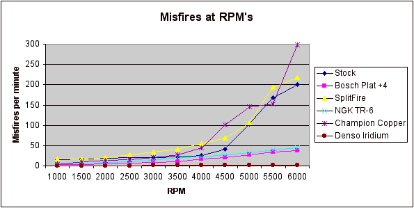

|
Spark Plugs |
|
From Rob02 Lightning: Go for the money and get the Denso IT-22's, here's why. Many people as you see are happy with TR-6's, but just as many are not. They are of course the plug of choice and that's partially because they are 18.00 compared to 80.00 for Denso's.
My personal experience was a bad idle from them. As for the heat range, why I like Denso's are because
you can run the colder 22's and be safe and give yourself a little room for error in a tune, yet because
of their design, you are pretty much guaranteed a great idle and no misses. Another words they're more
forgiving if you know what I mean. The main thing is THEY DO take more heat out of the cylinder than
a TR-6 will and heat is bad for a Lightning.
|
|
 |